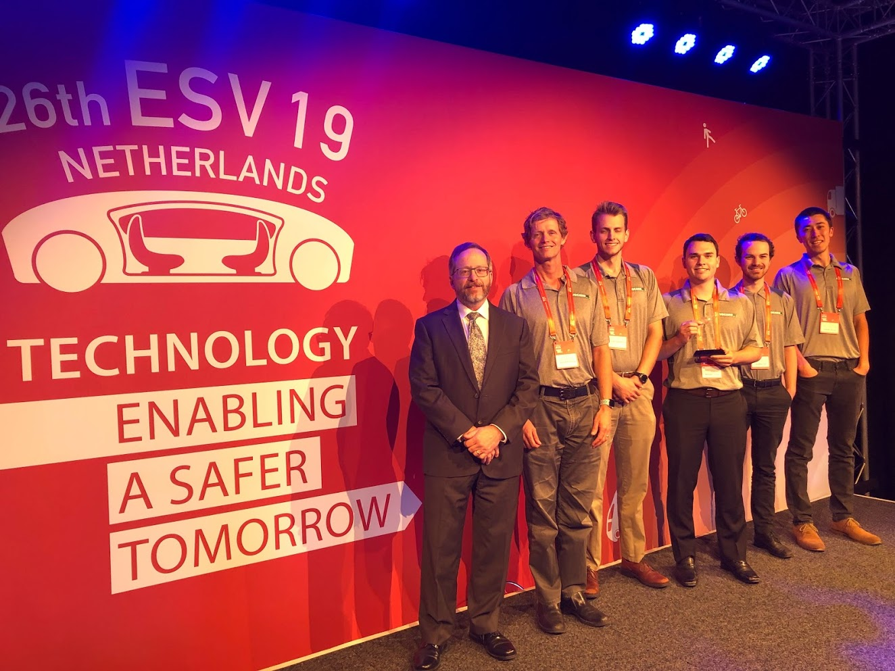

A brief background on this project.
The project's goal was to demonstrate the feasibility and value of developing vehicle-to-vehicle communication to enable vehicle platooning. There are many benefits that result from platooning (reduced fuel consumption and traffic congestion for starters), but safe platooning poses significant challenges.
For this project, we developed two small-scale vehicles and made them fully autonomous. After doing so, we tied the vehicles together over WiFi to allow them to communicate and act simultaneously.
This project taught me a great deal in both technical and soft skills. The technical skills I learned included software design, computer vision, machine learning, hardware interfacing, design for failure, and more. I wrote thousands of lines of code consistenting primarily of Python, C, and bash, while managing the codebase using our team's GitHub. The soft skills included writing technical papers, public speaking (I gave a ton of talks, including to Cal Poly's Industrial Advisory Board and at the Enhanced Safety of Vehicles conference in the Netherlands), teamwork, and leadership.
This project was truly a phenomenal experience that transformed who I am as a professional and as an academic, and I know it would not have been possible without the support of my teammates, professors, industry sponsors, and last but not least, my dad.
We won 2nd place at the international student design competition at the Enhanced Safety of Vehicles conference in the Netherlands. Our paper and a picture of some of our team members can be viewed here.
SEE VIDEOS BELOW!!!The following video shows my lane detection algorithm on a section of southbound Highway 101, north of Paso Robles. The algorithm identifies the lane lines within a region of interest and paints them green for programmer visibility. The center point tracks the center of the lane, which is used as input to our PID lane keeping controller.
After many hours of my teammate and me working on electronics and software we were able to produce the following. The video shows lane lines mounted on a chair (seen at the bottom of the frame) and a camera (on the desk). The camera captures video, which it feeds to the not-so-micro Jetson TX2 microcontroller for the necessary image processing. Finally, a pwm signal is sent to an Arduino (we do this because the Arduino, unlike the Jetson, has pwm hardware), which then controls the vehicle.
This video shows our car driving on the track and navigating an S-bend! I was able to access the car through WiFi (ssh) and run a script to start the vehicle. The vehicle navigates the roadway and I manually shut off the vehicle when it reaches the end of the roadway. A teammate is holding string tied to the car should the system fail and the car try to drive away (we have not yet set up the system to shut off on a disconnect from my laptop).
Note that the hardware is a mess right now as it allows for easy access of electronics in the development phase. We'll clean it up over time.
This video shows our car driving around the track for one of the first times! The main differences between the car in the previous video and now are:
This project is incredibly fun, but incredibly time consuming. Still, we make progress most days, and that alone is motivation to keep working on it...the best is yet to come!
I'll add more here when I get the chance (I know it's a MASSIVE jump from February 25 to May 29). I did take the time to add a few videos though of what is essentially the final product!
Somewhere in here (specifically an 80-hour week over spring break), we managed to get the lane keeping fast (as in the car's can drive the track quickly) and reliable, we developed communication between the vehicles, we developed controllers to modulate the speeds between the vehicles (even though they are built identically, they have slight mechanical differences that must be resolved with PID controllers), and lane changing capabilities (which will be utilized by the object detection).
The following video shows the lead vehicle dodging staggered pedestrians using a YOLO neural network for pedestrian detection. All commands (speed, braking, and lane changes) are communicated to the following vehicle immediately over WiFi.
This video shows the following vehicle dodging staggered pedestrians. Unlike the lead vehicle, the following vehicle has no ability to detect objects (this was deliberate) as it demonstrates the power of vehicle-to-vehicle communication. A hardcoded delay allows the following vehicle to change lanes in the same place as the lead vehicle, allowing for the following vehicle to dodge between objects.
And the same video from an observer's perspective...
At competition, the YOLO neural network failed as the dim, orange lighting in the conference center produced images that were sufficiently different from the training data that the neural network could no longer identify obstacles. Thus, over the course of a day, another teammate and I rewrote the entire object detection algorithm to be based entirely on the depth map collected from the stereoscopic cameras. The lane lines were passed to the object detection algorithm, which then estimated where the road was to determine if any obstacles identified in the depth map threatened the vehicle's safety. If so, it would check the other lane. If both lanes were blocked, the vehicle would stop. If only its own lane was blocked, the vehicle would change lanes.
Note that the red boxes are the regions to be searched for obstacles and the green lines are projections of the lane lines. In this video you can see the vehicle dodge my teammate's leg and stop when he stands in both lanes.
Collecting our 2nd place award at the Enhanced Safety of Vehicles international student design competition! From left to right: Art Carter (US Department of Transporation), Professor Charles Birdsong, Cole Oppenheim, Nick Lampe, Jacob Loh, and Kiyoshi Moran.
Not pictured: Professor Bruce DeBruhl, Kyle Bybee, James Gildart,
and Toan Le.
